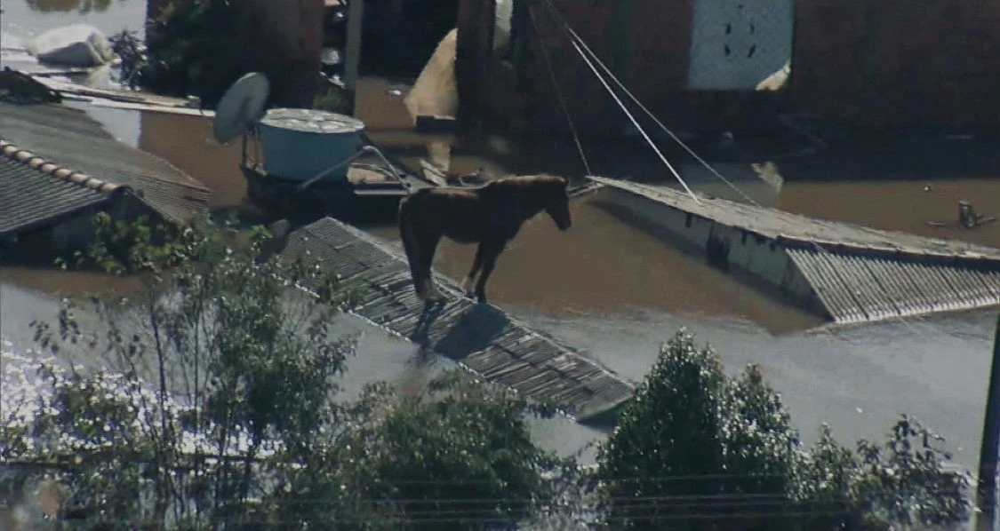

Kit de Emergência para Enchentes: Produtos Essenciais para Proteger sua Família
Veja como montar um kit de emergência para enchentes com água potável, alimentos, lanternas, powerbanks, rádio portátil, roupas impermeáveis, itens de higiene e equipamentos que aumentam a segurança da família em situações de calamidade.

As enchentes que atingiram o Rio Grande do Sul em 2024 deixaram uma mensagem dolorosa e importante para todo o Brasil: emergências podem acontecer de forma rápida, intensa e imprevisível.
Muitas famílias enfrentaram falta de energia, falhas na comunicação, dificuldade para carregar celulares, acesso limitado à água potável, mercados fechados, ruas bloqueadas, isolamento em residências e, em alguns casos, necessidade de resgate.
Em momentos assim, estar preparado não é exagero. É cuidado, prevenção e proteção. Um kit de emergência para enchentes pode fazer diferença na segurança, no conforto e na tranquilidade da sua família até a chegada de ajuda ou a normalização da situação.
Por que montar um kit de emergência para enchentes?
Durante uma enchente, a rotina pode mudar completamente em poucas horas. Ruas podem ficar intransitáveis, o fornecimento de energia pode ser interrompido, o sinal de celular pode oscilar e a água da rede pode ficar indisponível ou imprópria para consumo.
No episódio das enchentes no Rio Grande do Sul em 2024, muitas pessoas relataram dificuldades para se comunicar com familiares, carregar celulares, obter informações confiáveis, comprar mantimentos e sair de áreas isoladas.
Por isso, montar um kit de emergência é uma atitude preventiva. Ele não elimina os riscos, mas ajuda sua família a enfrentar os primeiros momentos da crise com mais segurança e organização.
Produtos indispensáveis em um kit de emergência para enchentes
A seguir, veja os principais itens que devem fazer parte de um kit doméstico eficiente para situações de alagamento, apagão ou isolamento.
1. Água potável
A água é o item mais importante do kit. Em enchentes, o abastecimento pode ser interrompido ou a água pode ficar contaminada.
O que incluir
- Água mineral lacrada.
- Galões ou garrafas armazenadas em local limpo e elevado.
- Filtros portáteis de emergência.
- Pastilhas purificadoras, quando disponíveis.
- Recipientes próprios para armazenar água.
Recomendação prática: mantenha água suficiente para pelo menos 72 horas, considerando todos os moradores da casa.
2. Alimentos de longa duração
Em uma enchente, sair de casa pode ser perigoso ou impossível. Por isso, priorize alimentos que não dependam de geladeira e possam ser consumidos com pouco ou nenhum preparo.
Boas opções
- Enlatados.
- Barras de cereal ou proteína.
- Biscoitos integrais.
- Leite em pó.
- Castanhas e amendoins.
- Sopas instantâneas.
- Alimentos desidratados.
- Comidas prontas embaladas a vácuo.
- Papinhas infantis, se houver bebês na família.
3. Lanternas e luzes de emergência
A falta de energia foi uma das grandes dificuldades enfrentadas em regiões atingidas por enchentes e temporais. Lanternas, luminárias recarregáveis e luzes de emergência reduzem o risco de acidentes e ajudam a manter a casa funcional durante a noite.
Produtos recomendados
- Lanterna de LED.
- Luz de emergência bivolt.
- Luminária recarregável.
- Lanterna de cabeça.
- Lanterna resistente à água.
- Pilhas extras.
- Luzes solares portáteis.
Prioridade alta: uma boa lanterna e uma luz de emergência são itens simples, acessíveis e muito úteis em apagões.
Ver lanternas e luzes de emergência4. Powerbanks pequenos e bancos de energia portáteis
Em uma emergência, o celular pode ser a principal forma de pedir ajuda, receber alertas, acessar mapas, falar com familiares e acompanhar informações oficiais. Por isso, ter energia extra é essencial.
Tipos úteis
- Powerbank compacto para celular.
- Banco de energia de alta capacidade.
- Carregador solar portátil.
- Estação de energia portátil.
- Cabos extras USB-C, Lightning e micro-USB.
Para quem vale mais a pena
- Famílias com mais de um celular.
- Pessoas que moram em áreas com risco de alagamento.
- Quem depende do celular para comunicação ou trabalho.
- Residências com idosos, crianças ou pessoas com necessidades especiais.
Compra inteligente: tenha pelo menos um powerbank pequeno sempre carregado e, se possível, um banco de energia de maior capacidade para a família.
Ver powerbanks e bancos de energia5. Gerador portátil ou estação de energia
Para quem busca preparação mais completa, geradores portáteis e estações de energia podem oferecer autonomia em apagões prolongados.
Atenção antes de comprar
- Verifique a potência do equipamento.
- Confira quais aparelhos ele suporta.
- Avalie o tempo de autonomia.
- Observe o tipo de combustível, se for gerador.
- Nunca use geradores a combustão em ambientes fechados.
- Priorize modelos com proteção contra sobrecarga e superaquecimento.
6. Itens de higiene pessoal
Em enchentes, o contato com água contaminada pode aumentar riscos à saúde. Itens de higiene ajudam a preservar o bem-estar da família.
- Sabonete.
- Papel higiênico.
- Lenços umedecidos.
- Álcool em gel.
- Escova e pasta de dentes.
- Absorventes.
- Fraldas infantis ou geriátricas.
- Sacos plásticos resistentes.
- Toalhas compactas.
- Luvas descartáveis.
7. Roupas impermeáveis e proteção contra chuva
Manter o corpo seco ajuda a evitar frio, desconforto e problemas de saúde durante deslocamentos ou evacuações.
- Capa de chuva.
- Jaqueta impermeável.
- Calça impermeável.
- Botas de borracha.
- Meias extras.
- Roupas térmicas, dependendo da região.
- Sacos estanques para proteger documentos e eletrônicos.
Proteja pessoas e documentos: capas de chuva, botas e sacos estanques são úteis tanto para segurança quanto para preservar itens importantes.
Ver itens impermeáveis8. Rádio portátil
Quando a internet falha e o sinal de celular fica instável, o rádio pode ser uma fonte importante de informação local e orientação.
- Rádio portátil à pilha.
- Rádio recarregável.
- Rádio com manivela.
- Rádio com lanterna integrada.
- Rádio com entrada USB para emergência.
9. Kit de primeiros socorros
Pequenos ferimentos podem acontecer durante evacuações, deslocamentos ou limpeza de áreas atingidas.
- Curativos.
- Gaze.
- Esparadrapo.
- Antisséptico.
- Luvas descartáveis.
- Soro fisiológico.
- Tesoura sem ponta.
- Termômetro.
- Medicamentos de uso contínuo.
- Analgésicos e antitérmicos, com orientação adequada.
Importante: medicamentos devem ser armazenados corretamente e usados conforme orientação médica.
10. Documentos protegidos
Perder documentos em uma enchente pode dificultar o acesso a ajuda, cadastro em programas emergenciais e comprovação de identidade.
- RG e CPF.
- Cartão do SUS.
- Certidões.
- Comprovante de residência.
- Documentos de imóveis e veículos.
- Receitas médicas.
- Lista de contatos de emergência impressa.
Como proteger: use pastas plásticas, envelopes impermeáveis ou sacos estanques.
11. Ferramentas e itens utilitários
- Canivete multifuncional.
- Apito de emergência.
- Fita adesiva resistente.
- Cordas.
- Isqueiro.
- Fósforos impermeáveis.
- Pilhas extras.
- Extensão elétrica.
- Adaptadores.
- Sacos de lixo reforçados.
- Pá pequena.
- Luvas de proteção.
12. Mochila ou caixa organizadora resistente
Não basta ter os produtos. Eles precisam estar organizados, protegidos e acessíveis.
- Mochila impermeável.
- Caixa plástica com tampa.
- Bolsa de emergência.
- Organizador transparente.
- Mochila cargueira para evacuação rápida.
Dicas práticas para montar um kit de emergência eficiente
- Pense em pelo menos 72 horas de autonomia: monte o kit considerando água, comida, luz e comunicação para 3 dias.
- Adapte ao perfil da família: crianças, idosos, pets e pessoas com necessidades especiais exigem itens específicos.
- Mantenha eletrônicos carregados: teste powerbanks, lanternas recarregáveis e rádios periodicamente.
- Revise validades: confira alimentos, água, pilhas e medicamentos a cada 3 ou 6 meses.
- Proteja documentos e tenha dinheiro em espécie: sistemas digitais podem ficar indisponíveis em emergências.
- Inclua itens para pets: ração, potes dobráveis, guia, medicamentos e carteira de vacinação.
- Tenha contatos impressos: não dependa apenas da agenda do celular.
Checklist completo para kit de emergência para enchentes
Produtos com maior prioridade de compra
Se você não puder comprar tudo de uma vez, monte seu kit aos poucos, começando pelos itens mais importantes.
Prioridade alta
- Água potável.
- Alimentos de longa duração.
- Lanterna.
- Luz de emergência.
- Powerbank.
- Kit de primeiros socorros.
- Itens de higiene.
- Capa de chuva.
- Documentos protegidos.
Prioridade média
- Rádio portátil.
- Banco de energia de maior capacidade.
- Sacos estanques.
- Botas impermeáveis.
- Mochila impermeável.
Prioridade avançada
- Estação de energia portátil.
- Gerador portátil.
- Carregador solar.
- Filtro portátil de água.
- Equipamentos extras para comunicação.
Produtos úteis para montar seu kit de emergência
Antes de comprar, compare avaliações, capacidade, durabilidade, garantia, segurança e custo-benefício.
Lanternas e luzes de emergência
Essenciais para quedas de energia, deslocamentos noturnos e segurança dentro de casa.
Conferir opçõesPowerbanks e bancos de energia
Ajudam a manter celulares e pequenos dispositivos funcionando durante apagões.
Ver modelosMochilas impermeáveis
Facilitam o transporte de documentos, roupas, alimentos e itens essenciais.
Comparar mochilasKits de primeiros socorros
Importantes para pequenos ferimentos, curativos e cuidados básicos em emergências.
Ver kitsPerguntas frequentes sobre kit de emergência para enchentes
O que deve ter em um kit de emergência para enchentes?
Água potável, alimentos de longa duração, lanternas, luzes de emergência, powerbanks, rádio portátil, kit de primeiros socorros, itens de higiene, roupas impermeáveis, documentos protegidos e uma mochila ou caixa resistente.
Quantos litros de água devo guardar para emergência?
O ideal é armazenar água suficiente para pelo menos 72 horas, considerando o número de pessoas da casa. A quantidade pode variar conforme clima, idade, saúde e necessidades específicas.
Powerbank é importante em enchentes?
Sim. Em situações de falta de energia, o powerbank ajuda a manter celulares carregados para comunicação, alertas, mapas e contatos de emergência.
Vale a pena comprar luz de emergência?
Sim. Luzes de emergência ajudam a evitar acidentes durante apagões, especialmente à noite, e trazem mais segurança para a família.
Gerador portátil é necessário para todo mundo?
Não necessariamente. Geradores e estações de energia são mais indicados para famílias em áreas de risco frequente, locais com apagões recorrentes ou pessoas que dependem de equipamentos essenciais.
Conclusão: a melhor hora para se preparar é antes da emergência
A enchente no Rio Grande do Sul em 2024 mostrou que situações extremas podem afetar milhares de famílias de forma repentina. Embora ninguém consiga controlar uma calamidade, é possível reduzir riscos e enfrentar esses momentos com mais preparo.
Montar um kit de emergência para enchentes é uma atitude simples, prática e responsável. Água, alimentos, lanternas, powerbanks, itens de higiene, roupas impermeáveis e equipamentos de energia podem representar mais segurança e tranquilidade quando tudo ao redor parece incerto.
A melhor hora para se preparar é antes da emergência acontecer.
Comece hoje pelos itens mais importantes
Uma boa lanterna, uma luz de emergência, um powerbank confiável, água potável e alimentos de longa duração já são um excelente começo para proteger sua família.
Ver produtos recomendados